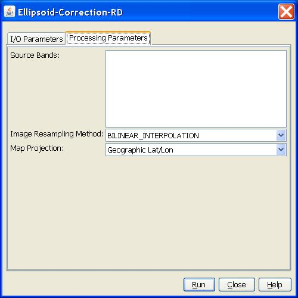

| Ellipsoid Correction | |
The operator implements the Range Doppler orthorectification method [1]. The implementation is exactly the same as for the Range Doppler Terrain Correction operator except that the averaged scene height is used instead of DEM.
Every output pixel is placed at the product's average scene height (avg_scene_height in the
metadata), so relief displacement is not corrected. The output suffix is _EC.
The GPT parameter table below is inherited from Terrain Correction, but not all of it applies:
demName, externalDEMFile, externalDEMNoDataValue,
externalDEMApplyEGM, demResamplingMethod) and nodataValueAtSea are
not used.saveDEM, saveLocalIncidenceAngle, saveProjectedLocalIncidenceAngle,
saveSigmaNought, saveGammaNought and saveBetaNought are always
switched off, so radiometric normalisation produces no output; use
saveSelectedSourceBand (default true).The following parameters are used by the operator:

GPT operator: Ellipsoid-Correction-RD. Generated from the operator source; parameter names are those used in GPT and graph XML.
| Parameter | Type | Default | Allowed values | Unit | Description |
|---|---|---|---|---|---|
sourceBands | String[] | The list of source bands. | |||
demName | String | Copernicus 30m Global DEM | The digital elevation model. | ||
externalDEMFile | File | External DEM | |||
externalDEMNoDataValue | double | 0 | External DEM No Data Value | ||
externalDEMApplyEGM | Boolean | true | External DEM Apply EGM | ||
demResamplingMethod | String | BILINEAR_INTERPOLATION | NEAREST_NEIGHBOUR, BILINEAR_INTERPOLATION, CUBIC_CONVOLUTION, BISINC_5_POINT_INTERPOLATION, BISINC_11_POINT_INTERPOLATION, BISINC_21_POINT_INTERPOLATION, BICUBIC_INTERPOLATION, DELAUNAY_INTERPOLATION | DEM Resampling Method | |
imgResamplingMethod | String | BILINEAR_INTERPOLATION | NEAREST_NEIGHBOUR, BILINEAR_INTERPOLATION, CUBIC_CONVOLUTION, BISINC_5_POINT_INTERPOLATION, BISINC_11_POINT_INTERPOLATION, BISINC_21_POINT_INTERPOLATION, BICUBIC_INTERPOLATION | Image Resampling Method | |
pixelSpacingInMeter | double | 0 | The pixel spacing in meters | ||
pixelSpacingInDegree | double | 0 | The pixel spacing in degrees | ||
mapProjection | String | WGS84(DD) | The coordinate reference system in well known text format | ||
alignToStandardGrid | boolean | false | Force the image grid to be aligned with a specific point | ||
standardGridOriginX | double | 0 | x-coordinate of the standard grid's origin point | ||
standardGridOriginY | double | 0 | y-coordinate of the standard grid's origin point | ||
nodataValueAtSea | boolean | true | Mask the sea with no data value (faster) | ||
saveDEM | boolean | false | Save DEM as band | ||
saveLatLon | boolean | false | Save latitude and longitude as band | ||
saveIncidenceAngleFromEllipsoid | boolean | false | Save incidence angle from ellipsoid as band | ||
saveLocalIncidenceAngle | boolean | false | Save local incidence angle as band | ||
saveProjectedLocalIncidenceAngle | boolean | false | Save projected local incidence angle as band | ||
saveSelectedSourceBand | boolean | true | Save selected source band | ||
saveLayoverShadowMask | boolean | false | Save layover shadow mask | ||
outputComplex | boolean | false | Output complex data | ||
applyRadiometricNormalization | boolean | false | Apply radiometric normalization | ||
saveSigmaNought | boolean | false | Save Sigma0 as a band | ||
saveGammaNought | boolean | false | Save Gamma0 as a band | ||
saveBetaNought | boolean | false | Save Beta0 as a band | ||
incidenceAngleForSigma0 | String | Use projected local incidence angle from DEM | Use incidence angle from Ellipsoid, Use local incidence angle from DEM, Use projected local incidence angle from DEM | Incidence angle used when computing sigma0: ellipsoid, local (DEM) or projected local (DEM) | |
incidenceAngleForGamma0 | String | Use projected local incidence angle from DEM | Use incidence angle from Ellipsoid, Use local incidence angle from DEM, Use projected local incidence angle from DEM | Incidence angle used when computing gamma0: ellipsoid, local (DEM) or projected local (DEM) | |
auxFile | String | Latest Auxiliary File | Latest Auxiliary File, Product Auxiliary File, External Auxiliary File | The auxiliary file | |
applyAPDCorrection | boolean | false | Correct for tropospheric path delay (~3 m range improvement) using a standard atmosphere model | ||
externalAuxFile | File | The antenne elevation pattern gain auxiliary data file. |